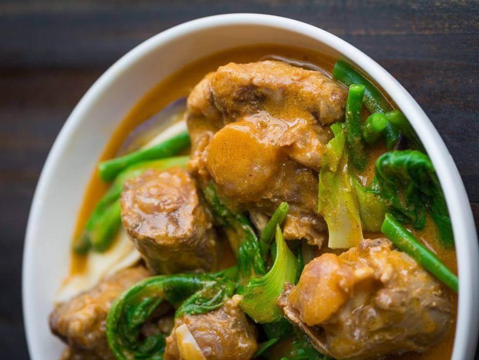

Kare Kare is a type of Filipino stew with a rich and thick peanut sauce. It is a popular dish in the Philippines served during special occasions. The traditional recipe is composed of ox tail. There are instances wherein both ox tripe and tail are used. The vegetable components of the dish are string beans, eggplant, bok choy, and banana blossoms. Lightly browned toasted ground rice is used to thicken the sauce.